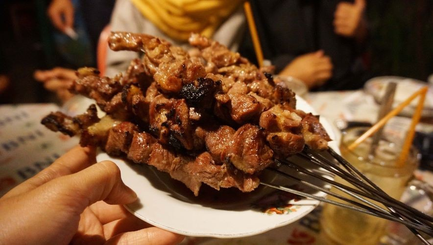
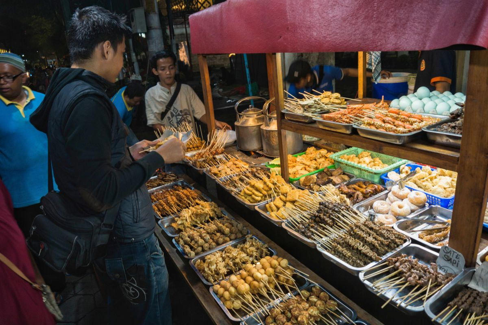
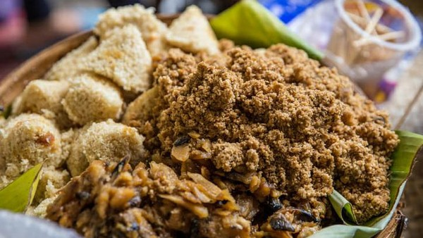

Menjelajahi cita rasa khas yang kaya dan menggugah selera
Yogyakarta dikenal dengan cita rasa khas yang cenderung manis, berpadu dengan kekayaan rempah tradisional. Setiap hidangan memiliki cerita dan keunikan tersendiri.
Makanan khas Jogja berbahan nangka muda dengan rasa manis.
Camilan legendaris dengan berbagai varian isi.
Yogyakarta tidak hanya dikenal sebagai kota budaya, tetapi juga sebagai surga kuliner yang menawarkan beragam hidangan khas dengan cita rasa unik. Setiap makanan memiliki karakter tersendiri yang lahir dari tradisi panjang dan kearifan lokal masyarakatnya.

Sate kambing khas Jogja yang berbeda dari sate pada umumnya karena menggunakan tusuk besi sebagai media pemanggang. Bumbu yang sederhana justru menghasilkan rasa gurih yang kuat, alami, dan sangat khas.
Hidangan pedas legendaris yang terkenal dengan sensasi “meledak” di mulut. Perpaduan cabai dan daging yang dimasak dengan bumbu khas menciptakan rasa kuat yang menggugah selera dan menantang pecinta pedas.

Lebih dari sekadar tempat makan, angkringan adalah simbol kehidupan sederhana dan kebersamaan di Yogyakarta. Suasana hangat dengan berbagai pilihan makanan membuatnya menjadi tempat favorit semua kalangan.
Ayam goreng khas dengan cita rasa manis dan gurih yang meresap hingga ke dalam. Proses memasak tradisional membuat teksturnya lembut, dipadukan dengan kremesan renyah yang menambah kenikmatan saat disantap.

Makanan tradisional berbahan dasar singkong yang menjadi alternatif nasi. Tiwul memiliki rasa khas yang sederhana namun sarat makna, mencerminkan kehidupan masyarakat yang dekat dengan alam.
Minuman tradisional yang menyegarkan dengan perpaduan santan, gula merah, dan cendol yang lembut. Cocok dinikmati di tengah cuaca hangat untuk memberikan kesegaran alami.
Keanekaragaman kuliner Yogyakarta tidak hanya memanjakan lidah, tetapi juga menghadirkan pengalaman budaya yang autentik. Setiap hidangan menyimpan cerita dan filosofi yang menjadikan setiap suapan terasa lebih bermakna dan berkesan.
Setiap sudut kota menyimpan kelezatan yang siap untuk dijelajahi.
Tentang Arutala Jogja